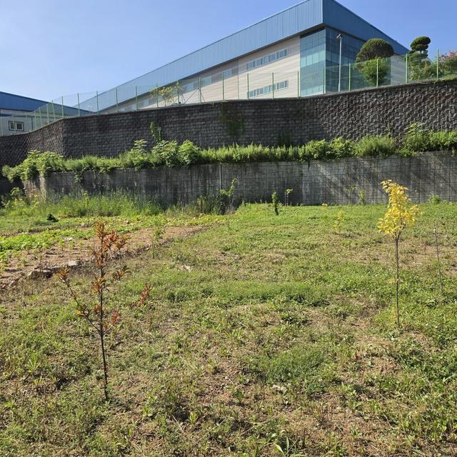

농지 조사와 처분 절차,
어디까지 알아두면 되는지 정리했습니다.
이 페이지는 배경 설명입니다. 내 상황에 맞는 도움과 상담 과정은 홈에서 상황을 골라 확인하세요. 통지를 받으셨다면 어느 단계인지부터 확인합니다.
2026 농지 전수조사, 숫자로 보기
네 가지 숫자만 알아도 지금 무엇을 확인해야 하는지 보입니다.
-
1,049만 필지1996년 이후 취득 전부
2026년 조사 대상 농지
농지법 시행(1996년) 이후 취득한 농지는 매매·상속·증여·경매를 가리지 않고 모두 대상입니다. 투자 목적으로 샀거나 상속받아 두고 있는 농지도 예외가 아닙니다.
-
55만 필지지금 진행 중
심층 현장조사
8~12월, 조사원이 현장에서 실제 이용상태를 확인합니다. 수도권·토지거래허가구역·경매 취득 농지가 우선 대상입니다.
-
25%매년 반복 부과
이행강제금 기준
처분명령을 이행하지 않으면 농지가액의 25%(감정가격·개별공시지가 중 높은 값). 요건이 계속되는 동안 매년 반복 부과될 수 있습니다.
-
1년기한이 흐르고 있습니다
처분의무 기간
처분사유가 확인되면 사유 발생일부터 1년 안에 처분해야 합니다. 이 기간 안에 실제 영농 전환이나 매도위탁 등 유예 요건을 검토할 수 있습니다.
8~12월 심층조사 진행 중
전국 농지를 조사합니다.
경매 취득 농지 등 우선 조사
출처: 농림축산식품부 「농지 전수조사 시행지침」·「농지 전수조사 추진계획」(2026), 농지법 제10조·제63조
이런 농지는 특히 확인이 필요합니다
- 농지만 가지고 농사를 짓지 않는 경우
- 상속받은 후 그대로 두고 있는 농지
- 장기간 휴경·방치된 농지
- 다른 지역에 거주해 직접 관리하지 못하는 농지
- 다른 사람에게 맡겨 놓은 농지
- 수도권·토지거래허가구역·경매로 취득한 농지
- 농지이용실태조사, 처분의무 통지 등을 받은 농지

처분 절차, 이렇게 진행됩니다
농사를 짓지 않는다고 곧바로 25%가 부과되는 것은 아닙니다.
법에서 정한 단계가 있고, 지금 어느 단계인지 확인하는 것이 먼저입니다.
- STEP 1
농지이용실태조사
지자체가 농지의 실제 이용상태를 조사합니다. 2026년은 기본조사(5~7월) 뒤 선별 농지를 심층조사(8~12월)합니다.
전수조사 시행지침 - STEP 2
처분의무 통지
농업경영에 이용하지 않는 등 처분사유가 확인되면, 사유 발생일부터 1년 이내 처분할 의무가 생깁니다.
농지법 제10조 - STEP 3
처분명령
처분의무 기간에 처분하지 않은 경우 등에는 6개월 이내 처분하도록 명령합니다.
농지법 제11조 - STEP 4
미이행
정당한 사유 없이 지정된 기간까지 처분명령을 이행하지 않은 경우입니다.
농지법 제63조 - STEP 5
이행강제금 부과
감정가격과 개별공시지가 중 높은 가액의 25%. 요건이 계속되는 동안 매년 반복 부과될 수 있습니다.
농지법 제63조
처분의무 기간에 처분하지 못했더라도, 해당 농지를 자기의 농업경영에 이용하거나 한국농어촌공사 등과 매도위탁계약을 체결하는 등 요건에 해당하면 처분명령을 3년간 유예할 수 있습니다. 2026년 개정으로 유예요건 충족 여부를 매년 조사합니다.
이미 부과된 금액은 이후 명령을 이행하더라도 징수됩니다. 부과처분에 대해서는 고지받은 날부터 30일 이내 이의제기 규정이 있습니다. 통지를 받으셨다면 기한부터 확인하세요.
이행강제금 예상 비용
농지가액 × 25% · 1회 부과 기준 단순 계산
※ 이행강제금 1회 기준 단순 계산 예시입니다. 실제 부과 여부와 금액은 개별 농지의 상황 및 행정절차에 따라 달라집니다.
※ 본 서비스는 농지처분명령 또는 이행강제금의 취소·면제를 보장하지 않습니다.
이행강제금이 있기 때문에,
농지는 관리해야 합니다
농지는 사두는 자산이 아니라 농업경영에 이용해야 하는 땅입니다.
이용하지 않으면 처분의무 → 처분명령 → 이행강제금(농지가액 25%, 매년)으로 이어집니다.
방치는 곧 처분사유입니다
휴경, 타인 경작, 창고·주차장 등 다른 용도 사용은 실태조사에서 처분사유로 확인될 수 있습니다. "언젠가 짓겠다"는 계획은 조사에서 보이지 않습니다.
기록 없는 영농은 설명이 어렵습니다
심었다는 말보다 작업 일자·내용·사진·재배현황이 남아 있어야 합니다. 관리의 절반은 농사이고, 나머지 절반은 기록입니다.
기한이 있습니다
처분의무 1년, 처분명령 6개월. 이행강제금은 요건이 계속되면 매년 반복됩니다. 관리 계획은 기한 안에 세워야 의미가 있습니다.
상담 신청
이름과 연락처만 남겨주시면 전화로 농지 상황을 확인하고, 도울 수 있는 범위와 비용을 안내합니다. 범위와 비용에 동의하신 뒤에만 진행하며, 무료진단만 받고 마치셔도 됩니다.
- 신청이름·연락처를 남깁니다.
- 전화 확인농지 상황과 필요한 정보를 여쭤봅니다.
- 범위·비용 안내도울 수 있는 부분과 유료 서비스 조건을 설명합니다.
- 동의 후 진행확인·동의하신 범위만 진행합니다.
- 전화 상담 · [상담 가능 시간][상담전화]
- 카카오톡 채널올바른농지 채널 열기
- 이메일이메일 문의